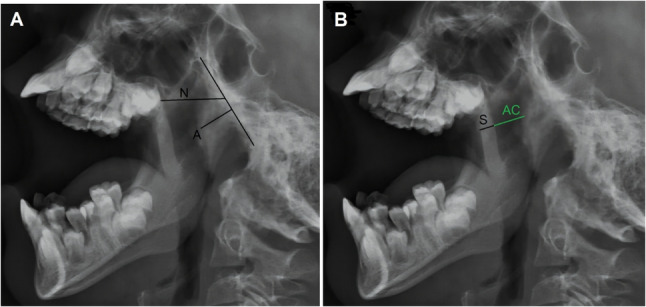
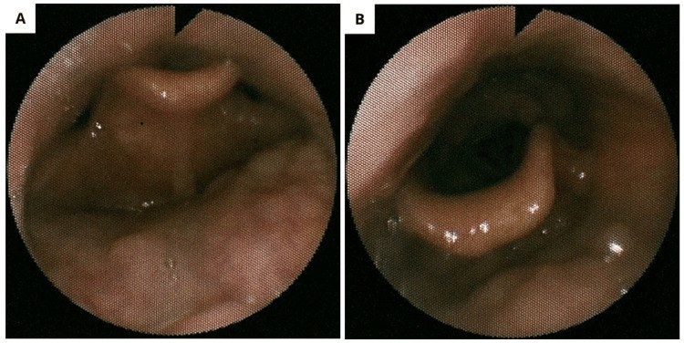
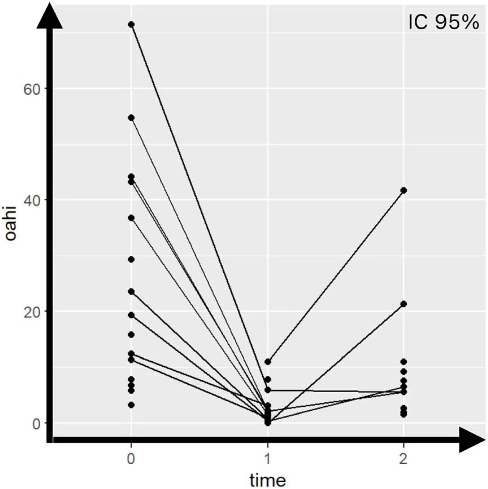

1812 — Ngưng thở khi ngủ tắc nghẽn TỒN DƯ sau cắt amidan–VA ở trẻ (Down, béo phì) / Residual obstructive sleep apnoea after adenotonsillectomy
Tags: pattern:osa-ton-du pattern:tac-nghen-da-tang vung:duong-tho-tren vung:hau-mieng score:OAHI protocol:PSG protocol:DISE protocol:MRI-duong-tho
Mức chắc chắn (certainty): tổng hợp y văn (literature synthesis) — tổng hợp từ y văn mở 2017–2026, đối chiếu PMCID từng bài (Europe PMC): Stockunaite P, Medicina (Kaunas) 2026, PMC13027964; Costa Gomes S, Braz J Otorhinolaryngol 2026, PMC13563574; Finnegan E, Ann Otol Rhinol Laryngol 2026, PMC13125704; Soršáková A, Life (Basel) 2025, PMC12387549; Zarei E, BMC Pediatr 2026, PMC12990599; Manycz PO, J Clin Med 2026, PMC13566038; Freitas S, Cureus 2026, PMC13378873. Số nào chưa kiểm chứng ghi "chưa rõ".
Bài này trả lời "đã cắt amidan–VA rồi mà trẻ vẫn ngáy/ngưng thở thì sao, và chụp gì để tìm tầng tắc nghẽn còn lại". OSA nguyên phát và OSA ở trẻ bệnh phổi mạn ở 1803; tăng áp phổi do OSA ở 686; mềm sụn thanh quản ở 694.
1. Tổng quan bệnh học – cơ chế hình ảnh
- Định nghĩa tồn dư (residual OSA, rOSA): sau cắt amidan–VA (adenotonsillectomy, AT), trẻ vẫn có OAHI ≥ 1 sự kiện/giờ khi đo lại bằng đa ký giấc ngủ (polysomnography, PSG). Các nghiên cứu dùng ngưỡng khác nhau — AHI > 1, OAHI > 1, AHI > 1,5 hoặc OAHI > 2 — nên tỷ lệ không so sánh tuyệt đối được (Stockunaite P 2026, PMC13027964). Phân độ vẫn theo trẻ: nhẹ 1–5, vừa 5–10, nặng > 10 sự kiện/giờ (Costa Gomes S 2026, PMC13563574).
- Tần suất: gộp 13 nghiên cứu (2010–2024), rOSA dao động 18,6–85,0%; tổng quan chung ghi tới ~40% trẻ còn OSA sau AT, còn nhóm nguy cơ cao (Down, béo phì, bất thường sọ mặt) 30–75% (Stockunaite P 2026, PMC13027964; Manycz PO 2026, PMC13566038). Đây không phải biến chứng hiếm — là lý do phải có kế hoạch đo lại, không "mổ xong là khỏi".
- Vì sao cắt amidan–VA không giải quyết hết (TẠI SAO, không chỉ liệt kê):
- Còn mô lympho ở tầng khác: amidan lưỡi (lingual tonsil) và amidan VA tái phát nằm ngoài trường mổ. Trên 33 trẻ rOSA sau AT, nội soi giấc ngủ do thuốc (drug-induced sleep endoscopy, DISE) thấy VA 54,5%, tầng trên thanh môn 48,5%, đáy lưỡi 45,5% — tức là mổ amidan–VA chỉ giải quyết một tầng (Manycz PO 2026, PMC13566038).
- Sụp vòm hầu – thành bên – nắp thanh môn do trương lực cơ hầu giảm khi ngủ, đặc biệt trong giấc ngủ REM. Đây là tắc nghẽn động, không thấy khi trẻ thức; khám họng lúc thức có thể bình thường.
- Béo phì làm tăng mô mỡ quanh hầu, giảm dung tích cặn chức năng (functional residual capacity, FRC) → giảm lực kéo mở đường thở, tăng áp lực tới hạn đóng (critical closing pressure, Pcrit); kèm viêm hệ thống và thay đổi kiểm soát thần kinh–cơ. rOSA ở trẻ béo 23,0–72,8%, có nghiên cứu 85% ngay đêm đầu sau mổ (Stockunaite P 2026, PMC13027964).
- Hội chứng Down: giữa mặt kém phát triển, lưỡi to, hầu hẹp, giảm trương lực cơ, béo phì — nên AT chỉ "khỏi" 6–33% so với ~79% trẻ nói chung; rOSA ở Down 54–68% (Costa Gomes S 2026, PMC13563574; Stockunaite P 2026, PMC13027964).
- Hen, viêm mũi dị ứng, trào ngược, bất thường sọ mặt, tuổi < 3 hoặc > 7 làm tăng nguy cơ; khói thuốc và yếu tố kinh tế–xã hội cũng được ghi nhận (Stockunaite P 2026, PMC13027964).
- Vật lý đường thở — vì sao "hẹp 1 mm" đã đủ gây ngưng thở: hầu là ống mềm, áp lực trong lòng (P_lumen) trong thì hít vào càng âm khi cố thở; khi P_lumen < Pcrit thì hầu xẹp. Ở trẻ béo, FRC thấp làm Pcrit tăng; ở Down, giảm trương lực cơ giãn hầu làm Pcrit tăng thêm. Vì vậy cùng một lượng mô lympho còn lại, trẻ béo/Down xẹp nhiều hơn trẻ cân đối — giải thích vì sao tỷ lệ rOSA khác nhau rất lớn giữa các nhóm.
- Vì sao PSG không định vị được tầng tắc: PSG đo dòng khí, nỗ lực hô hấp, SpO₂, CO₂, điện não — nó cho biết có tắc nghẽn và nặng bao nhiêu, nhưng không cho biết tắc ở đâu. Trong khi đó DISE nhìn động học từ mũi đến thanh môn, và MRI động (cine MRI) đo diện tích lòng hầu theo thì thở. Đây là lý do bài này đặt hình ảnh sau PSG, không thay PSG.
- Vì sao đo lại phải đúng thời điểm: sau mổ còn phù niêm mạc và mô hạt; PSG quá sớm dễ đọc "tồn dư" giả. Các nghiên cứu đo lại 3,25 ± 4,35 tháng (ngắn hạn) và 53,25 ± 33,95 tháng (dài hạn), tối thiểu 18 tháng (Costa Gomes S 2026, PMC13563574). Ngưỡng tối ưu chưa có đồng thuận — bài này khuyến cáo 3–6 tháng sau mổ, sớm hơn nếu triệu chứng nặng hoặc có tăng áp phổi.
- Con số tiên lượng đáng nhớ ở Down (đoàn hệ 25 trẻ, PSG trước – ngắn – dài hạn): OAHI 25,55 ± 19,70 (3,2–71,4) → 3,20 ± 3,38 (0–11,0) → 10,37 ± 11,76 (1,5–41,7); 28% còn rOSA ngắn hạn nhưng 44% còn ở dài hạn; chênh ngắn–dài 9,437, p < 0,001 (Costa Gomes S 2026, PMC13563574). Nghĩa là kết quả tốt lúc 3 tháng không bảo đảm 4 năm sau — phải đo lại lần hai.
- Kiểu hình "người lớn" ở trẻ: 34 trẻ sau AT, rOSA 24/34 (70,6%); kiểu hình người lớn (béo, tắc nghẽn đa tầng) 16/20 (80,0%) so với kiểu hình kinh điển 8/14 (57,1%); trong số rOSA, nặng 17,6%, vừa 20,6%, nhẹ 32,4%, AHI trung bình 6,67 ± 9,17 (Soršáková A 2025, PMC12387549). Đây là bằng chứng định lượng cho "béo phì đổi kiểu hình bệnh".
2. Mẫu hình + chẩn đoán phân biệt theo tầng (gamut)
Câu hỏi trung tâm: "tắc còn lại ở tầng nào?" — trả lời bằng DISE/MRI, không bằng cảm giác khi khám họng.
- Tầng mũi – VA (nasal/adenoid): VA tái phát, hẹp cửa mũi sau, phì đại cuốn mũi, polyp; trẻ ngạt mũi, ngủ há miệng, ngáy.
- Tầng vòm hầu (velum): sụp mềm vòm miệng, dài vòm; DISE thấy hẹp thì hít vào.
- Tầng hầu bên (oropharyngeal lateral walls): thành bên sụp vào trong, amidan còn to; hay gặp ở béo phì.
- Tầng đáy lưỡi (tongue base): phì đại amidan lưỡi, lưỡi to (Down, to đầu chi), tụt lưỡi; DISE 45,5% ở trẻ rOSA sau AT.
- Tầng trên thanh môn (supraglottis/epiglottis): sụp nắp thanh môn kiểu "cửa sập" (trapdoor), sa thanh môn; 48,5% trong loạt DISE sau AT (Manycz PO 2026, PMC13566038).
- Không do tắc nghẽn: giảm thông khí trung ương, ngưng thở trung ương, giảm thông khí do béo phì (obesity hypoventilation syndrome, OHS), động kinh/giật cơ — không được gọi là rOSA dù AHI cao.
- Gamut theo nhóm bệnh: (1) Down — đa tầng + giảm trương lực; (2) béo phì — thành bên + đáy lưỡi + OHS; (3) bất thường sọ mặt (Pierre Robin, Treacher Collins, Crouzon) — hẹp xương; (4) hen/viêm mũi dị ứng — viêm và phù niêm mạc; (5) sau mổ — VA tái phát, dính/sẹo vòm; (6) thần kinh–cơ — giảm trương lực, giảm thông khí.
- Mnemonic "MALT": Malformation (sọ mặt), Adenoid regrowth, Lingual tonsil/tongue base, Tone (giảm trương lực) — cộng thêm Obesity và Epiglottis.
3. Bảng so sánh phân biệt (ma trận đối chiếu)
| Thực thể (entity) | Hình ảnh điển hình | Chốt vào (rule-in) | Chốt loại (rule-out) | Gợi ý xác nhận |
|---|---|---|---|---|
| VA tái phát | X-quang cổ nghiêng: khối mô mềm lấp cửa mũi sau; A/N > 1,5 (Fujioka); DISE: VA chặn > 50% cửa mũi sau | Tiền sử AT + ngạt mũi tái phát + A/N > 1,5 + DISE thấy VA | Cửa mũi sau thông thoáng trên DISE/MRI; tắc nghẽn chỉ ở đáy lưỡi | X-quang nghiêng (A/N), DISE, MRI T2 |
| Phì đại amidan lưỡi | MRI T2: khối mô lympho tăng tín hiệu ở đáy lưỡi; DISE: đáy lưỡi chặn | DISE đáy lưỡi ≥ 2 (VOTE) + mô lympho dày trên MRI | Đáy lưỡi thông thoáng; nguyên nhân ở tầng khác | DISE (chốt), MRI |
| Sụp nắp thanh môn (epiglottic collapse) | DISE: nắp thanh môn sụp ra sau kiểu trapdoor khi hít vào; giảm khi xoay đầu sang bên | Sụp động thì hít vào, mất khi xoay đầu/nâng hàm | Hẹp cố định (sẹo, u, màng) không đổi theo tư thế | DISE với nghiệm pháp tư thế |
| Sụp vòm hầu/thành bên | DISE: vòm mềm/thành bên sụp vào trong; MRI động: diện tích lòng hầu giảm | Sụp ≥ 50% khi ngủ + tăng khi nằm ngửa | Thành bên vững, không sụp | DISE, cine MRI |
| rOSA do béo phì | BMI z-score > 2; mỡ quanh hầu trên MRI; DISE đa tầng/concentric | Béo + rOSA + đa tầng/concentric + FRC thấp | BMI bình thường, tắc một tầng do VA | BMI, PSG có CO₂, DISE |
| rOSA ở Down | MRI/CT: hẹp mũi hầu, lưỡi to, hẹp sọ mặt; DISE đa tầng | Down + OAHI còn cao + đa tầng + giảm trương lực | Down nhưng PSG bình thường, không tắc khi ngủ | PSG lặp, DISE, MRI |
| Bất thường sọ mặt | Cephalogram/CT: hẹp xương hàm, tụt hàm, xương mũi thấp | Phân tích sọ mặt thấy hẹp + rOSA | Xương bình thường, mô mềm là chính | Cephalogram, CT sọ mặt |
| Hen/viêm mũi dị ứng | Phù niêm mạc mũi, VA to; không có tổn thương đặc hiệu trên CT | Hen/viêm mũi + rOSA + cải thiện khi điều trị viêm | Không viêm, không phù | Lâm sàng, test dị ứng |
| Ngưng thở trung ương/giảm thông khí | PSG: không có nỗ lực hô hấp; CO₂ tăng khi ngủ | Không nỗ lực + CO₂ > 50 mmHg | Có nỗ lực + tắc nghẽn → OSA | PSG có CO₂/EtCO₂ |
| Sau mổ — sẹo/dính vòm hầu | DISE: dải xơ, hẹp vòm; MRI: mô xơ giảm tín hiệu | Tiền sử mổ + dải xơ + hẹp cố định | Niêm mạc mềm, không xơ | DISE, MRI |

Trái (A): phương pháp Fujioka — A = chiều dày VA, N = chiều rộng mũi hầu; tỷ lệ A/N. Phải (B): phương pháp Cohen — AC = khoảng khí sau vòm mềm, S = chiều dày vòm mềm. Nguồn: Zarei E et al., BMC Pediatr 2026, PMC12990599, CC BY-NC-ND 4.0 (nguyên bản, không chỉnh sửa).Dấu hiệu hình ảnh chốt và ngưỡng
- A/N (Fujioka) > 1,5: độ nhạy 100%, độ đặc hiệu 52,9% so với DISE; Cohen > 3,5: Se 83,3%, Sp 75,0%; tương quan với DISE r = 0,670 (Fujioka) và r = 0,458 (Cohen), n = 48 (Zarei E 2026, PMC12990599). Kết luận: phim nghiêng rất nhạy nhưng kém đặc hiệu — dương tính không chứng minh tắc nghẽn, âm tính cũng không loại trừ tầng dưới.
- DISE — VOTE: Velum, Oropharynx (thành bên/amidan), Tongue base, Epiglottic; mỗi tầng 0 = không sụp, 1 = sụp một phần, 2 = sụp hoàn toàn; ghi thêm kiểu sụp (trước–sau, bên, đồng tâm). VOTE là hệ dùng nhiều nhất (65,1% chuyên gia trong khảo sát quốc tế), nhưng không có hệ chuẩn cho trẻ; các hệ trẻ gồm Chan–Parikh, NAVOTEL, PedDISE-8, IPSES (Manycz PO 2026, PMC13566038).
- PedDISE-8: 8 tầng (mũi, VA, vòm, amidan, amidan lưỡi, đáy lưỡi, nắp thanh môn, mô aryepiglottic); độ tin cậy giữa người đọc ICC 0,67–0,88, trong cùng người 0,71–0,87; số tầng sụp nặng tương quan với OAHI τ = 0,119, p = 0,004 (Manycz PO 2026, PMC13566038).
- DISE đổi kế hoạch mổ 30–60%; phẫu thuật đáy lưỡi theo DISE giảm AHI ~50%, SpO₂ nadir tăng ~3% (tổng quan trong Manycz PO 2026, PMC13566038).
4. Protocol chụp + hệ phân độ
- Bước 1 — PSG (chuẩn vàng): AASM phiên bản trẻ em (v2.6); ghi dòng khí mũi–miệng, nỗ lực ngực–bụng, SpO₂, CO₂/EtCO₂, ECG, EEG/EMG, tư thế, video. Tính OAHI (loại sự kiện trung ương) và AHI; ghi SpO₂ nadir, T90, chỉ số ngưng thở trung ương, CO₂ cao nhất. Lặp 3–6 tháng sau AT; ≥ 18 tháng nếu Down/nguy cơ cao (Costa Gomes S 2026, PMC13563574).
- Bước 2 — đánh giá tầng bằng hình ảnh:
- X-quang cổ nghiêng (lateral neck radiograph): sàng lọc VA, đo A/N và Cohen; không dùng để loại trừ tầng đáy lưỡi/nắp thanh môn; chụp đúng tư thế, đầu trung tính, thì hít vào.
- DISE (drug-induced sleep endoscopy): chỉ định khi rOSA có kế hoạch mổ lần hai, khám thức không khớp mức nặng, hoặc nguy cơ cao (Down, béo, sọ mặt). Ghi VOTE/PedDISE-8 từng tầng, kèm nghiệm pháp tư thế (xoay đầu, nâng hàm) để phân biệt sụp động với hẹp cố định.
- MRI đường thở/cine MRI: khi cần đánh giá mô mềm, đáy lưỡi, thành hầu, sọ mặt, hoặc trẻ không hợp tác DISE; T2 thấy mô lympho tăng tín hiệu, T1 thấy mỡ; cine MRI đo diện tích lòng hầu theo thì thở, không nhiễm xạ nhưng cần ngủ/giảm đau.
- Cephalogram/CT sọ mặt: khi nghi bất thường xương (tụt hàm, hẹp xương hàm, Pierre Robin).
- Bước 3 — quyết định: nếu còn mô lympho/VA → mổ lại/adenoidectomy; nếu đáy lưỡi/amidan lưỡi → cắt amidan lưỡi (lingual tonsillectomy); nếu nắp thanh môn → điều trị tư thế/nội soi; nếu béo phì → giảm cân, CPAP; nếu Down đa tầng → CPAP ± phẫu thuật theo tầng, không hứa khỏi.
- Ngưỡng hành động thực hành: rOSA nhẹ (1–5) có thể theo dõi + điều trị viêm/trào ngược; vừa–nặng (≥ 5) hoặc có tăng áp phổi/ngưng thở dài → CPAP hoặc can thiệp tầng; OAHI ≥ 10 ở Down/loạn sản sọ mặt → đánh giá DISE sớm.
flowchart TD
A[Trẻ còn ngáy/ngưng thở sau cắt amidan-VA] --> B[PSG lặp sau 3-6 tháng]
B --> C{OAHI}
C -->|1-5 nhẹ| D[Điều trị viêm mũi, trào ngược, theo dõi]
C -->|5-10 vừa| E[Đánh giá tầng: DISE hoặc MRI]
C -->|>10 nặng| F[CPAP hoặc DISE sớm]
E --> G{Tầng tắc}
G -->|VA tái phát| H[Mổ lại VA]
G -->|Đáy lưỡi/amidan lưỡi| I[Cắt amidan lưỡi]
G -->|Nắp thanh môn| J[Tư thế, can thiệp trên thanh môn]
G -->|Béo phì đa tầng| K[Giảm cân + CPAP]
F --> G
5. Biến thể bình thường và cạm bẫy
- Đo PSG quá sớm (< 6 tuần): phù hậu phẫu làm OAHI cao giả; đo quá muộn bỏ lỡ giai đoạn tái phát mô lympho. Chọn 3–6 tháng và ghi rõ thời điểm trong báo cáo.
- AHI bình thường nhưng trẻ vẫn có triệu chứng: AHI chỉ đếm sự kiện, không đo gánh nặng thiếu oxy. Ở trẻ, hypoxic burden (diện tích dưới đường cong SpO₂) tương quan với OAHI r = 0,801, AUC 0,888 — tốt hơn ODI3/T90/nadir (bài 1803). Đừng "trấn an" chỉ vì AHI 1–2.
- Ngưng thở trung ương tăng sau mổ: trong đoàn hệ Down, chỉ số ngưng thở trung ương tăng ở cả ngắn và dài hạn so với trước mổ (Costa Gomes S 2026, PMC13563574). Có thể do bộc lộ ngưng thở trung ương khi tắc nghẽn được giải phóng, hoặc do giảm thông khí; đừng quy tất cả cho "còn tắc".
- Sai số của phim cổ nghiêng: xoay đầu, ngửa quá mức, thì thở ra, phim mờ → A/N giả. Độ đặc hiệu chỉ 52,9% ở cutoff 1,5; không dùng phim nghiêng để quyết định mổ lại.
- DISE dương tính giả: an thần quá sâu (propofol liều cao) làm mất trương lực cơ hầu → sụp "giả"; quá nông lại âm giả. Dùng dexmedetomidine ± ketamine, giữ thở tự nhiên, BIS hỗ trợ, tránh thuốc co mạch/tê tại chỗ (Manycz PO 2026, PMC13566038).
- Bỏ sót tầng thứ hai (satisfaction of search): thấy VA tái phát là dừng, bỏ qua đáy lưỡi/nắp thanh môn — đúng loạt DISE sau AT với 45,5% đáy lưỡi và 48,5% trên thanh môn.
- Down: đừng hứa "mổ là khỏi". Tỷ lệ khỏi chỉ 6–33%; 44% còn rOSA dài hạn; kế hoạch phải gồm PSG lặp, CPAP, đánh giá tầng.
- Béo phì: AHI có thể tăng lại dù mổ tốt nếu trẻ tăng cân; theo dõi BMI z-score cùng PSG.
- OHS vs OSA: béo phì + CO₂ > 50 mmHg khi ngủ + không có tắc nghẽn tương xứng → nghĩ giảm thông khí do béo phì, cần CPAP/BiPAP và đánh giá trung tâm, không chỉ "cắt VA".
6. Tự lượng giá — Blind Quiz
Ca 1 — Trẻ béo phì, ngáy to, đã được chỉ định cắt amidan–VA

- Bối cảnh: bé gái 10 tuổi, 77,5 kg, BMI 31,04 kg/m² (> 99th percentile), chậm phát triển nhận thức; ngáy, ngưng thở được chứng kiến, ngủ ngày nhiều. PSG: OAHI 15/giờ, SpO₂ nadir 85%. Khám thức: cuốn mũi to, amidan–VA độ II, Mallampati III.
- Câu hỏi: (1) Hình A cho thấy tầng tắc nào? (2) Vì sao không nên cắt amidan–VA ngay? (3) Nghiệm pháp nào trên hình B giúp phân biệt sụp động với hẹp cố định?
Bấm để hiện đáp án (findings + chẩn đoán)
- Dấu hiệu: (A) nắp thanh môn sụp ra sau kiểu "cửa sập" (posterior trapdoor collapse) khi hít vào, bít gần kín thanh môn; (B) hết sụp khi xoay đầu sang bên — sụp có thành phần tư thế.
- Chẩn đoán: rOSA do sụp nắp thanh môn đơn độc (VOTE: V0 O0 T0 E2), không phải do amidan–VA. Vì vậy không cắt amidan–VA; xử trí giảm cân + điều trị tư thế, theo dõi.
- Vì sao: DISE cho thấy tắc nghẽn động, tầng trên thanh môn mà khám thức bỏ sót; đây là ca nguyên văn minh họa DISE đổi kế hoạch mổ.
- Nguồn ảnh: Freitas S et al., Cureus 2026, PMC13378873, CC BY 4.0.
Ca 2 — Trẻ Down, kết quả PSG thay đổi theo thời gian

- Bối cảnh: bé trai 4 tuổi, hội chứng Down, OSA nặng, đã cắt amidan–VA. Trục 0 = trước mổ; 1 = < 18 tháng** sau mổ; 2 = **> 18 tháng.
- Câu hỏi: (1) Mô tả xu hướng OAHI; (2) vì sao nhiều đường vẫn nằm trên 1/giờ ở mốc 2? (3) Kế hoạch theo dõi?
Bấm để hiện đáp án (findings + chẩn đoán)
- Dấu hiệu: OAHI giảm mạnh từ trước mổ (trung bình 25,55) xuống ngắn hạn (3,20) nhưng tăng lại ở dài hạn (10,37); nhiều trẻ vẫn > 1/giờ, một số > 20–40/giờ.
- Chẩn đoán: rOSA tái phát/tiến triển ở trẻ Down — 28% còn rOSA ngắn hạn, 44% ở dài hạn; chênh ngắn–dài 9,437, p < 0,001.
- Vì sao: Down có hẹp sọ mặt, lưỡi to, giảm trương lực, béo phì; AT chỉ giải quyết một tầng, mô lympho và giảm trương lực vẫn còn. PSG lặp ở > 18 tháng là bắt buộc; cân nhắc CPAP, cắt amidan lưỡi (OAHI giảm −8,20, KTC −13,46 đến −2,94), hoặc phẫu thuật theo DISE.
- Nguồn ảnh: Costa Gomes S et al., Braz J Otorhinolaryngol 2026, PMC13563574, CC BY 4.0 (hình nguyên bản).
Ca 3 — Trẻ 7 tuổi vẫn ngáy sau mổ, phim cổ nghiêng
- Bối cảnh: bé trai 7 tuổi, cắt amidan–VA 1 năm trước, vẫn ngáy và thở miệng; phim cổ nghiêng được đo A/N = 1,6, Cohen AC/S = 3,2.
- Câu hỏi: (1) Các tỷ lệ này gợi ý gì? (2) Có đủ để mổ lại không? (3) Bước tiếp theo?
Bấm để hiện đáp án (findings + chẩn đoán)
- Dấu hiệu: A/N 1,6 > 1,5 và Cohen 3,2 < 3,5 — phim nghiêng gợi ý VA còn to, nhưng hai phương pháp không đồng thuận.
- Chẩn đoán: nghi VA tái phát, chưa đủ chốt. Ở cutoff 1,5, Fujioka Se 100% nhưng Sp chỉ 52,9%; Cohen cutoff 3,5 có Se 83,3%/Sp 75,0% — dương tính giả thường gặp do xoay đầu, thì thở, mô mềm.
- Bước tiếp: DISE (hoặc MRI) để xem VA có chặn thực sự và có tầng đáy lưỡi/nắp thanh môn kèm theo; chỉ mổ lại khi DISE xác nhận và triệu chứng/PSG tương xứng.
- Nguồn ảnh: Zarei E et al., BMC Pediatr 2026, PMC12990599, CC BY-NC-ND 4.0 (nguyên bản).
Bài liên quan chéo
- 1803 – Ngưng thở khi ngủ do tắc nghẽn ở trẻ bệnh phổi mạn
- 686 – Tăng áp lực động mạch phổi trong bệnh phổi mạn ở trẻ
- 694 – Mềm sụn thanh quản ở trẻ
- 602 – Mềm sụn khí–phế quản ở trẻ
- 3047 – Hẹp khí quản mắc phải sau đặt nội khí quản ở trẻ
Ảnh
images/1812_oahi-truoc-sau_Dothi_PMC13563574.jpg— đồ thị OAHI trước/ngắn/dài hạn, Costa Gomes S et al., Braz J Otorhinolaryngol 2026, PMC13563574, CC BY 4.0 (chuyển định dạng từ webp, không cắt/ghép).images/1812_dise-sup-epiglot_Noisoi_PMC13378873.jpg— DISE sụp nắp thanh môn, Freitas S et al., Cureus 2026, PMC13378873, CC BY 4.0.images/1812_fujioka-cohen_Xquang_PMC12990599.jpg— Fujioka A/N và Cohen AC/S, Zarei E et al., BMC Pediatr 2026, PMC12990599, CC BY-NC-ND 4.0 (nguyên bản, không chỉnh sửa).
Disclaimer: Bài học dùng cho mục đích giáo dục, không thay thế đánh giá của bác sĩ chuyên khoa. Không dùng để chẩn đoán độc lập khi chưa có người hướng dẫn.